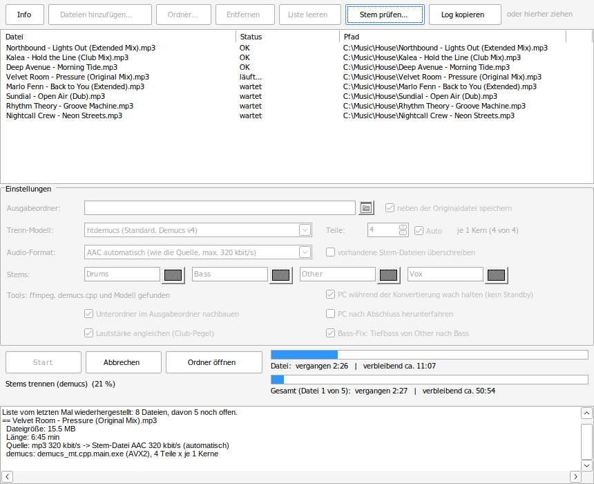
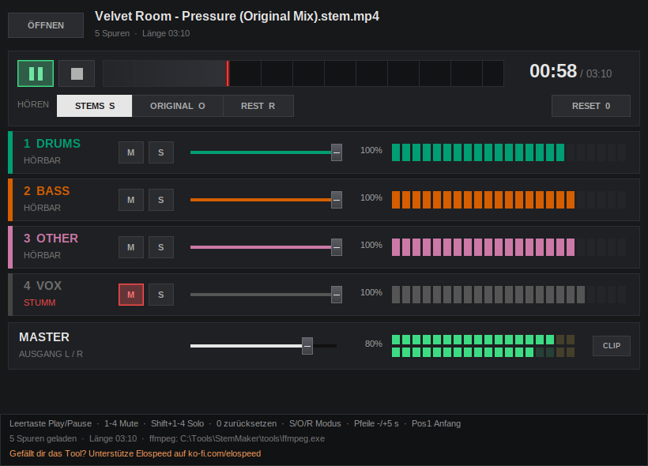

Aus deinen MP3s werden
Traktor Stems
StemMaker zerlegt einen Track in Drums, Bass, Melodie und Gesang und speichert ihn als fertige .stem.mp4 für Traktor. Ein kleines Windows-Programm, kostenlos und Open Source: kein Python, kein PyTorch, keine Grafiktreiber, nichts einzurichten.
- Kostenlos, MIT-Lizenz
- Windows 10 / 11
- Kein Python, keine Grafikkarte
- Läuft lokal auf deinem PC
- Ganze Ordner auf einmal
- Bis 320 kbit/s

So sieht es aus
Von der MP3 zur Traktor-Stem-Datei und danach Probehören im StemPlayer: Stumm, Solo, A/B mit dem Original und Fader. Ton an!
Alles drin, nichts zu installieren
Entpacken, starten, Musik reinziehen. Beim ersten Start lädt StemMaker ffmpeg und das Trennmodell selbst herunter.
Vier echte Stems
Drums, Bass, Other (Melodie) und Vox, dazu das Original als Master-Spur, genau im Format, das Traktor erwartet. Namen und Farben sind einstellbar.
Qualität wie Traktor
Nutzt das Open-Source-Modell Demucs v4 (htdemucs). Im direkten Vergleich mit einer Stem-Datei aus Traktor Pro 4 waren Drums, Gesang und Pegel praktisch gleich. Drei Modelle zur Wahl: htdemucs_ft für die beste Qualität, Demucs v3, wenn es schneller gehen soll.
Für ganze Sammlungen gebaut
Ganze Ordner hinzufügen, vor dem Start die geschätzte Dauer sehen und über Nacht laufen lassen. Die Liste wird nach jeder Datei gespeichert: Ein Absturz oder Stromausfall kostet einen Track, nicht den ganzen Lauf. In unserem eigenen Belastungstest kamen 400 Dateien in verschachtelten Ordnern vollständig durch, auch nach Abbrüchen und hart beendetem Programm, mit 1:1 nachgebautem Ordnerbaum.
Tags und Cover bleiben
Titel, Interpret, Album, Genre, Jahr, Tracknummer, BPM, Tonart, Label und Cover werden aus der MP3 übernommen. So sieht die Stem-Datei in deiner Traktor-Collection richtig aus.
Nativ statt Python-Installation
Das ganze Programm ist eine 4 MB grosse Windows-EXE, die Trennung läuft über C++-Code (demucs.cpp) statt über Python und PyTorch. Nichts zu installieren, nichts im Hintergrund, kein Konto, keine Cloud. Startet in einer Sekunde, und deine Musik verlässt den PC nie.
Club-Pegel und Bass-Fix
Leise Dateien werden ohne Limiter auf Club-Pegel angehoben, damit die Wellenformen gut lesbar sind und ein Stem im Set nicht plötzlich im Pegel abfällt. Tiefbass, den das Modell im Melodie-Stem lässt, wandert in den Bass-Stem, so wie bei Traktor. Kick und Bass bleiben dadurch satt.
Passt sich deinem PC an
Wählt die schnellste Version für deinen Prozessor (AVX2, AVX oder generisch), hält den PC bei langen Läufen wach und fährt ihn am Ende auf Wunsch herunter.
So geht's
In drei Schritten von deiner Musikdatei zur Stem-Datei für Traktor.
- Herunterladen und entpackenZIP von GitHub laden und irgendwohin entpacken, zum Beispiel nach
C:\Tools\StemMaker. Kein Installer, keine Administratorrechte. - Musik reinziehenMP3-, WAV-, FLAC-, AIFF-, M4A- oder OGG-Dateien oder ganze Ordner ins Fenster ziehen und auf Start klicken.
- In Traktor ladenAus jedem Track wird
Titel.stem.mp4, neben dem Original oder in einem Ordner deiner Wahl. In ein Stem-Deck laden und loslegen.
Was du alles nicht machen musst
Die meisten Stem-Trenner sind Kommandozeilen-Werkzeuge. Das Schwierigste ist meist, sie überhaupt zum Laufen zu bringen, und am Ende liegen vier einzelne Dateien da.
- Keine Python-Umgebung, kein PyTorch, keine CUDA-Treiber und keine Versionskonflikte
- Keine Grafikkarte: Die Trennung läuft auf dem Prozessor jedes 64-Bit-Windows-PCs
- Kein Routing von Hand: Die vier Stems und das Original landen in einer
.stem.mp4, fertig für das Stem-Deck - Keine Zusatzsoftware für den Traktor-Container und keine Traktor-Lizenz zum Umwandeln
- Kein Klicken Track für Track: Ordner auswählen und später wiederkommen
- Kein Testimport: Der mitgelieferte StemPlayer zeigt dir, ob die Trennung gelungen ist
Erst reinhören, dann auflegen
Mit dem mitgelieferten StemPlayer prüfst du eine fertige Stem-Datei, ohne sie vorher in Traktor zu importieren.
- Stumm, Solo und Lautstärke für jeden Stem, mit Pegelanzeige
- A/B-Vergleich mit dem Original
- Modus „Rest“ zeigt, was bei der Trennung verloren ging
- Öffnet per Drag & Drop oder direkt aus StemMaker

Ehrlich zur Geschwindigkeit
Die Trennung läuft nur auf dem Prozessor und braucht deshalb etwas Zeit. Dafür funktioniert sie auf fast jedem Windows-PC und deine Musik wird nirgends hochgeladen.
- Aktueller PC: htdemucs braucht etwa doppelt so lang wie der Song, Demucs v3 etwa so lang wie der Song
- htdemucs_ft (beste Qualität) ist etwa viermal langsamer als htdemucs
- StemMaker lernt das Tempo deines PCs und zeigt, wie lange die Liste dauert
| Computer | htdemucs (Standard) | Demucs v3 |
|---|---|---|
| Intel i7-12700KF (2021) | ca. 7–8 min | ca. 4 min |
| Intel i5-2500 (2011) | ca. 27 min | ca. 13 min |
Fragen und Antworten
Ist StemMaker wirklich kostenlos?
Ja. StemMaker ist Open Source unter der MIT-Lizenz. Keine Werbung, kein Konto, keine Bezahlversion. Wenn er dir gefällt, freut sich Elospeed über eine freiwillige Spende auf Ko-fi.
Welche Traktor-Versionen spielen die Stem-Dateien ab?
Die Dateien folgen dem offenen NI-Stem-Format (MP4 mit Master, vier Stems und Stem-Metadaten), genau wie bei Stemgen. Getestet wurden sie in Traktor Pro 4. Andere Programme, die .stem.mp4 lesen, sollten ebenfalls funktionieren.
Brauche ich eine Grafikkarte oder Python?
Nein. StemMaker ist ein einzelnes Windows-Programm, die Trennung steckt als C++-Code (demucs.cpp) direkt drin. Es gibt also keine Python-Umgebung, kein PyTorch und keinen CUDA-Treiber zu installieren und nichts, was sich mit anderer Software auf deinem PC in die Haare kriegt. Gerechnet wird auf dem Prozessor. Nötig sind Windows 10 oder 11 (64 Bit) und beim ersten Start eine Internetverbindung für die Downloads (ffmpeg ca. 56 MB, Modell 81 MB).
Windows zeigt „Der Computer wurde durch Windows geschützt“. Ist das schlimm?
StemMaker ist nicht digital signiert, weil Zertifikate jedes Jahr Geld kosten. Klick auf „Weitere Informationen“ und dann auf „Trotzdem ausführen“. Der komplette Quellcode liegt auf GitHub. Du kannst den Download auf VirusTotal prüfen oder StemMaker selbst bauen.
Wie gut ist die Trennung?
Im Test gegen eine Stem-Datei, die Traktor Pro 4 aus demselben Track gemacht hat, lag StemMaker etwa gleichauf: Drums, Kick und Gesang klangen fast identisch. Bezahl-Tools wie RipX oder Lalal.ai und Spezialmodelle in UVR5 trennen noch sauberer. Hört man einen Stem solo, sind manchmal kleine Artefakte zu hören, wie bei jedem Werkzeug dieser Art.
Traktor Pro 4 kann selbst Stems machen. Wozu StemMaker?
Ehrlich gesagt: Traktor 4 ist pro Track schneller, und wenn dir dessen eigene Trennung reicht, brauchst du StemMaker nicht. Traktor behält seine Stems aber in der eigenen Sammlung: im Ordner „Stems“, mit verschlüsselten Dateinamen, verknüpft mit dem Original-Track. StemMaker schreibt eigenständige .stem.mp4-Dateien mit lesbaren Namen neben deine Musik. Die kannst du auf einen anderen Laptop oder USB-Stick kopieren und in jedem Programm nutzen, das .stem.mp4 liest. StemMaker arbeitet komplette Ordner selbstständig ab, zum Beispiel über Nacht, zeigt vorher die geschätzte Dauer und macht nach einem Abbruch oder Stromausfall weiter. Eine Traktor-Lizenz brauchst du dafür nicht, und leise Dateien hebt StemMaker auf Club-Pegel, damit die Wellenformen gut lesbar sind.
Werden Tags und Cover übernommen?
Ja: Titel, Interpret, Album, Genre, Jahr, Tracknummer, BPM, Tonart, Label, ISRC und das Cover werden aus der Quelldatei übernommen, damit die Stem-Datei in deiner Sammlung gleich richtig aussieht. BPM und Tonart ersetzt Traktor ohnehin durch seine eigene Analyse; bis dahin und in anderen Programmen stehen die Werte aus deiner Datei.
Welche Musik darf ich verwenden?
StemMaker ist ein Werkzeug für Musik, die dir gehört, zum Beispiel gekaufte Tracks oder eigene Produktionen. Bitte respektiere die Rechte der Künstler und nutze die Stem-Dateien nur für deine eigenen Zwecke.
Gibt es eine Kommandozeilen-Version?
Ja, AddOns\StemCLI.exe macht dasselbe ohne Fenster, für Batch-Dateien oder die Windows-Aufgabenplanung.
Bereit für deine eigenen Stems?
ZIP herunterladen, entpacken und den ersten Track reinziehen.